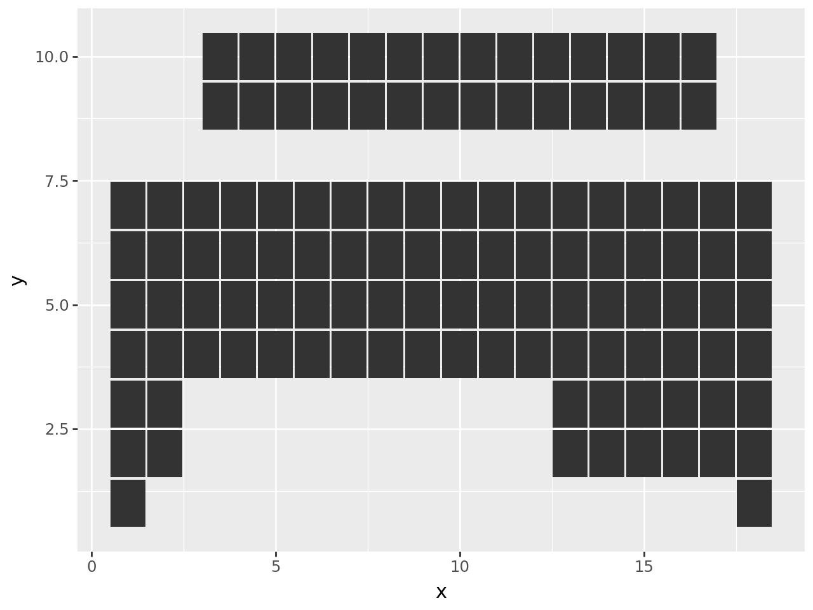
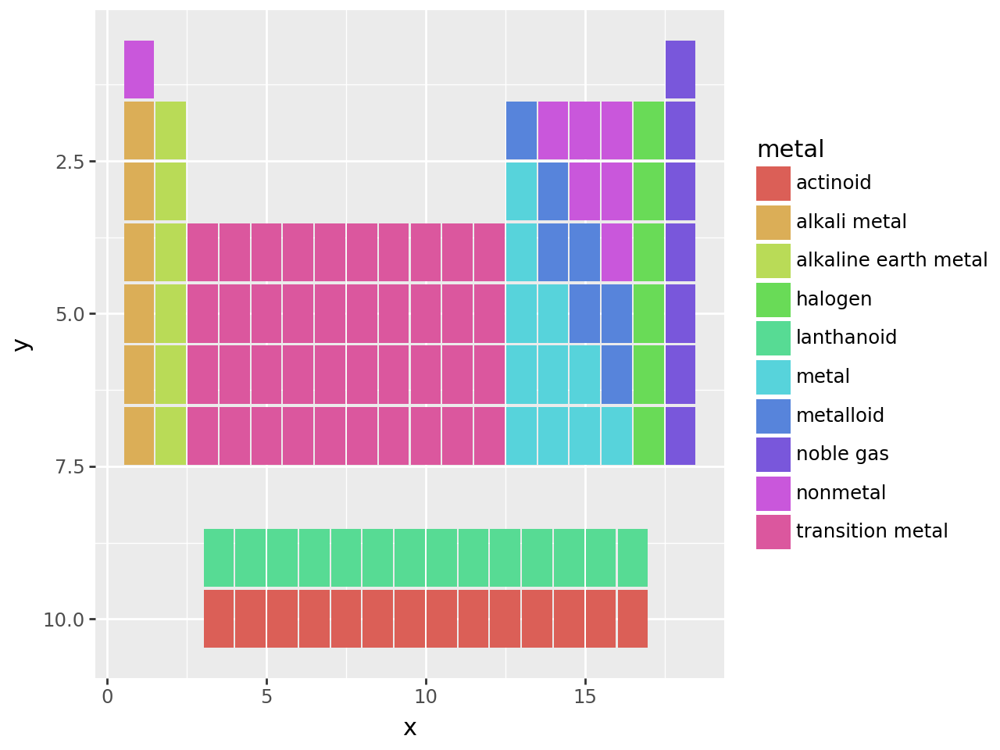
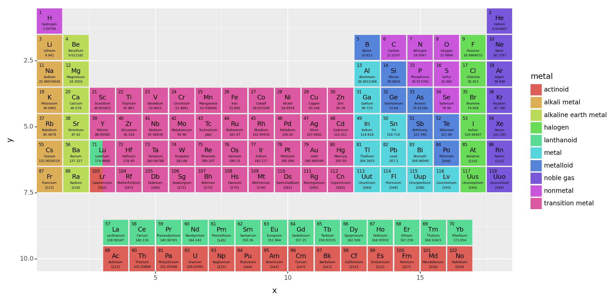
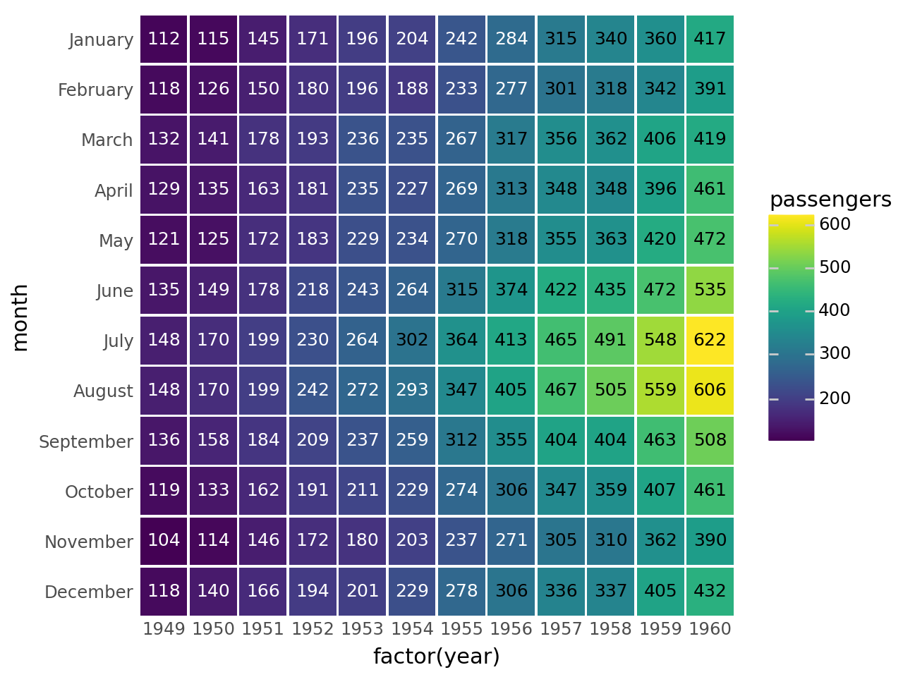

import pandas as pd
import numpy as np
from plotnine import (
ggplot,
aes,
geom_tile,
geom_text,
scale_y_reverse,
scale_y_discrete,
scale_fill_brewer,
scale_color_manual,
coord_equal,
theme,
theme_void,
element_blank,
element_rect,
element_text,
)
geom_tile(
mapping=None,
data=None,
*,
stat="identity",
position="identity",
na_rm=False,
inherit_aes=True,
show_legend=None,
raster=False,
**kwargs
)Rectangles specified using a center points
Parameters
mapping : aes = None-
Aesthetic mappings created with aes. If specified and
inherit_aes=True, it is combined with the default mapping for the plot. You must supply mapping if there is no plot mapping.Aesthetic Default value x y alpha 1color Nonefill '#333333'group linetype 'solid'size 0.1The bold aesthetics are required.
data : DataFrame = None-
The data to be displayed in this layer. If
None, the data from from theggplot()call is used. If specified, it overrides the data from theggplot()call. stat : str | stat = "identity"-
The statistical transformation to use on the data for this layer. If it is a string, it must be the registered and known to Plotnine.
position : str | position = "identity"-
Position adjustment. If it is a string, it must be registered and known to Plotnine.
na_rm : bool = False-
If
False, removes missing values with a warning. IfTruesilently removes missing values. inherit_aes : bool = True-
If
False, overrides the default aesthetics. show_legend : bool | dict = None-
Whether this layer should be included in the legends.
Nonethe default, includes any aesthetics that are mapped. If abool,Falsenever includes andTruealways includes. Adictcan be used to exclude specific aesthetis of the layer from showing in the legend. e.gshow_legend={'color': False}, any other aesthetic are included by default. raster : bool = False-
If
True, draw onto this layer a raster (bitmap) object even ifthe final image is in vector format. **kwargs : Any = {}-
Aesthetics or parameters used by the
stat.
See Also
plotnine.geoms.geom_rect
Examples
Periodic Table of Elements
Graphing of highly organised tabular information
Read the data.
elements = pd.read_csv("data/elements.csv")
elements.head()| atomic number | symbol | name | atomic mass | CPK | electronic configuration | electronegativity | atomic radius | ion radius | van der Waals radius | ... | EA | standard state | bonding type | melting point | boiling point | density | metal | year discovered | group | period | |
|---|---|---|---|---|---|---|---|---|---|---|---|---|---|---|---|---|---|---|---|---|---|
| 0 | 1 | H | Hydrogen | 1.00794 | #FFFFFF | 1s1 | 2.20 | 37.0 | NaN | 120.0 | ... | -73.0 | gas | diatomic | 14.0 | 20.0 | 0.00009 | nonmetal | 1766 | 1 | 1 |
| 1 | 2 | He | Helium | 4.002602 | #D9FFFF | 1s2 | NaN | 32.0 | NaN | 140.0 | ... | 0.0 | gas | atomic | NaN | 4.0 | 0.00000 | noble gas | 1868 | 18 | 1 |
| 2 | 3 | Li | Lithium | 6.941 | #CC80FF | [He] 2s1 | 0.98 | 134.0 | 76 (+1) | 182.0 | ... | -60.0 | solid | metallic | 454.0 | 1615.0 | 0.54000 | alkali metal | 1817 | 1 | 2 |
| 3 | 4 | Be | Beryllium | 9.012182 | #C2FF00 | [He] 2s2 | 1.57 | 90.0 | 45 (+2) | NaN | ... | 0.0 | solid | metallic | 1560.0 | 2743.0 | 1.85000 | alkaline earth metal | 1798 | 2 | 2 |
| 4 | 5 | B | Boron | 10.811 | #FFB5B5 | [He] 2s2 2p1 | 2.04 | 82.0 | 27 (+3) | NaN | ... | -27.0 | solid | covalent network | 2348.0 | 4273.0 | 2.46000 | metalloid | 1807 | 13 | 2 |
5 rows × 21 columns
Alter the data types of the information that will be plotted. This makes it convenient to work with.
elements["group"] = [-1 if g == "-" else int(g) for g in elements.group]
elements["bonding type"] = elements["bonding type"].astype("category")
elements["metal"] = elements["metal"].astype("category")
elements["atomic_number"] = elements["atomic number"].astype(str)The periodic table has two tables, a top and bottom. The elements in the top have groups, and those in the bottom have no groups. We make separate dataframes for both – they have different alignments.
top = elements.query("group != -1").copy()
bottom = elements.query("group == -1").copy()The top table is nice and well behaving. The x location of the elements indicate the group and the y locations the period.
top["x"] = top.group
top["y"] = top.periodThe bottom table has 2 rows, with the atomic number increasing to the right. We create an x based on the atomic number and add a horizontal shift. As the dataframe is ordered by atomic number, the operation is easier. The bottom elements are labelled with a “period”. We add a vertical shift to give us a good y location that gives the appearance of two tables.
nrows = 2
hshift = 3.5
vshift = 3
bottom["x"] = np.tile(np.arange(len(bottom) // nrows), nrows) + hshift
bottom["y"] = bottom.period + vshiftWe will be plotting using tiles and we want to have some space between the tiles. We have set the x and y locations above to take up a unit of space. To get a good effect, the tile dimensions should be less than 1.
tile_width = 0.95
tile_height = 0.95First peak
(
ggplot(aes("x", "y"))
+ geom_tile(top, aes(width=tile_width, height=tile_height))
+ geom_tile(bottom, aes(width=tile_width, height=tile_height))
)
The table upside down. We could have been more careful when creating the y locations since the periods are drawn in descending order. But, we can fix that with a reverse scale.
(
ggplot(aes("x", "y"))
+ geom_tile(top, aes(width=tile_width, height=tile_height))
+ geom_tile(bottom, aes(width=tile_width, height=tile_height))
+ scale_y_reverse() # new
)
Let us apply some color to it.
(
ggplot(aes("x", "y"))
+ aes(fill="metal") # new
+ geom_tile(top, aes(width=tile_width, height=tile_height))
+ geom_tile(bottom, aes(width=tile_width, height=tile_height))
+ scale_y_reverse()
)
Now for some trick
Goal: To add text to the tiles
There are four pieces of text that we shall add to the tiles, that is 4 geom_text additions. As we have two tables, that comes to 8 geom_text additions. When any geom is added to a ggplot object, behind the scenes a layer is created and added. We can create a group of layers that can be added to a ggplot object in one go using a list.
We use a function that accepts a dataframe, and returns a list of geoms.
def inner_text(data):
layers = [
geom_text(
data,
aes(label="atomic_number"),
nudge_x=-0.40,
nudge_y=0.40,
ha="left",
va="top",
fontweight="normal",
size=6,
),
geom_text(data, aes(label="symbol"), nudge_y=0.1, size=9),
geom_text(
data, aes(label="name"), nudge_y=-0.125, fontweight="normal", size=4.5
),
geom_text(
data, aes(label="atomic mass"), nudge_y=-0.3, fontweight="normal", size=4.5
),
]
return layers(
ggplot(aes("x", "y"))
+ aes(fill="metal")
+ geom_tile(top, aes(width=tile_width, height=tile_height))
+ geom_tile(bottom, aes(width=tile_width, height=tile_height))
+ inner_text(top) # new
+ inner_text(bottom) # new
+ scale_y_reverse()
)
It is crowded in there and the tiles do not have equal dimentions. Use the theme create a larger figure. coord_equal give us equal units along the axes, this makes the tiles square.
(
ggplot(aes("x", "y"))
+ aes(fill="metal")
+ geom_tile(top, aes(width=tile_width, height=tile_height))
+ geom_tile(bottom, aes(width=tile_width, height=tile_height))
+ inner_text(top)
+ inner_text(bottom)
+ scale_y_reverse()
+ coord_equal(expand=False) # new
+ theme(figure_size=(12, 6)) # new
)It is has all the information we want, except one for complication. Elements Lu and Lr also belong in the bottom table. One way to show this duality is to have tiles with two colors split horizontally.
The colors are determined by the metal field, and we know the x and y locations. We create a dataframe with this information to create a half-tile. A half-tile is centered at the quarter mark.
split_df = pd.DataFrame(
{
"x": 3 - tile_width / 4,
"y": [6, 7],
"metal": pd.Categorical(["lanthanoid", "actinoid"]),
}
)(
ggplot(aes("x", "y"))
+ aes(fill="metal")
+ geom_tile(top, aes(width=tile_width, height=tile_height))
+ geom_tile(split_df, aes(width=tile_width / 2, height=tile_height)) # new
+ geom_tile(bottom, aes(width=tile_width, height=tile_height))
+ inner_text(top)
+ inner_text(bottom)
+ scale_y_reverse()
+ coord_equal(expand=False)
+ theme(figure_size=(12, 6))
)
Change the fill color for a different look and use a theme that clears out all the clutter.
from plotnine import guides
(
ggplot(aes("x", "y"))
+ aes(fill="metal")
+ geom_tile(top, aes(width=tile_width, height=tile_height))
+ geom_tile(split_df, aes(width=tile_width / 2, height=tile_height))
+ geom_tile(bottom, aes(width=tile_width, height=tile_height))
+ inner_text(top)
+ inner_text(bottom)
+ scale_y_reverse()
+ scale_fill_brewer(type="qual", palette=3) # new
+ coord_equal(expand=False)
+ theme_void() # new
+ theme(
figure_size=(12, 6),
plot_margin_left=0.01,
plot_margin_right=0.01,
plot_background=element_rect(fill="white"),
) # new
)
Add the group number along the top most row of each column, and period number along the left side of the top table.
For the period number, we set the breaks on the y scale.
# The location of the group number is the top most (and therefore smallest period)
# element with the group
groupdf = top.groupby("group").agg(y=("period", "min")).reset_index()Finally,
# Gallery Plot
(
ggplot(aes("x", "y"))
+ aes(fill="metal")
+ geom_tile(top, aes(width=tile_width, height=tile_height))
+ geom_tile(split_df, aes(width=tile_width / 2, height=tile_height))
+ geom_tile(bottom, aes(width=tile_width, height=tile_height))
+ inner_text(top)
+ inner_text(bottom)
+ geom_text(
groupdf,
aes("group", "y", label="group"),
color="gray",
nudge_y=0.525,
va="bottom",
fontweight="normal",
size=9,
inherit_aes=False,
) # new
+ scale_y_reverse(breaks=range(1, 8), limits=(0, 10.5)) # modified
+ scale_fill_brewer(type="qual", palette=3)
+ coord_equal(expand=False)
+ theme_void()
+ theme(
figure_size=(12, 6),
plot_margin_left=0.01,
plot_margin_right=0.01,
plot_background=element_rect(fill="white"),
axis_text_y=element_text(margin={"r": 5}, color="gray", size=9), # new
)
)
What we could have done different:
- After we set the
xandypositions in th thetopandbottomdataframes, we could have concatenated them back together. Then, thatLayerstrick would not save us much.
Pro tip: Save the plot as a pdf.
Annotated Heatmap
Conditinous data recorded at discrete time intervals over many cycles
Read data
flights = pd.read_csv("data/flights.csv")
months = flights["month"].unique() # Months ordered January, ..., December
flights["month"] = pd.Categorical(flights["month"], categories=months)
flights.head()| year | month | passengers | |
|---|---|---|---|
| 0 | 1949 | January | 112 |
| 1 | 1949 | February | 118 |
| 2 | 1949 | March | 132 |
| 3 | 1949 | April | 129 |
| 4 | 1949 | May | 121 |
# We use 'factor(year)' -- a discrete -- instead of 'year' so that all the years
# are displayed along the x-axis.
# The .95s create spacing between the tiles.
(
ggplot(flights, aes("factor(year)", "month", fill="passengers"))
+ geom_tile(aes(width=0.95, height=0.95))
+ geom_text(aes(label="passengers"), size=9)
)
That looks like what we want, but it could do with a few tweaks. First the contrast between the tiles and the text is not good for the lower passenger numbers. We use pd.cut to partition the number of passengers into two discrete groups.
flights["p_group"] = pd.cut(
flights["passengers"], (0, 300, 1000), labels=("low", "high")
)
flights.head()| year | month | passengers | p_group | |
|---|---|---|---|---|
| 0 | 1949 | January | 112 | low |
| 1 | 1949 | February | 118 | low |
| 2 | 1949 | March | 132 | low |
| 3 | 1949 | April | 129 | low |
| 4 | 1949 | May | 121 | low |
(
ggplot(flights, aes("factor(year)", "month", fill="passengers"))
+ geom_tile(aes(width=0.95, height=0.95))
+ geom_text(aes(label="passengers", color="p_group"), size=9, show_legend=False) # modified
+ scale_color_manual(["white", "black"]) # new
)
Last tweaks, put January at the top and remove the axis ticks and plot background.
# Gallery Plot
(
ggplot(flights, aes("factor(year)", "month", fill="passengers"))
+ geom_tile(aes(width=0.95, height=0.95))
+ geom_text(aes(label="passengers", color="p_group"), size=9, show_legend=False)
+ scale_color_manual(["white", "black"]) # new
+ scale_y_discrete(limits=months[::-1]) # new
+ theme( # new
axis_ticks=element_blank(),
panel_background=element_rect(fill="white"),
)
)
You can get similar results if you replace
+ geom_tile(aes(width=.95, height=.95))
+ geom_text(aes(label='passengers', color='p_group'), size=9, show_legend=False)with
+ geom_label(aes(label='passengers', color='p_group'), size=9, show_legend=False)Credit: This example is a recreation of this seaborn example.